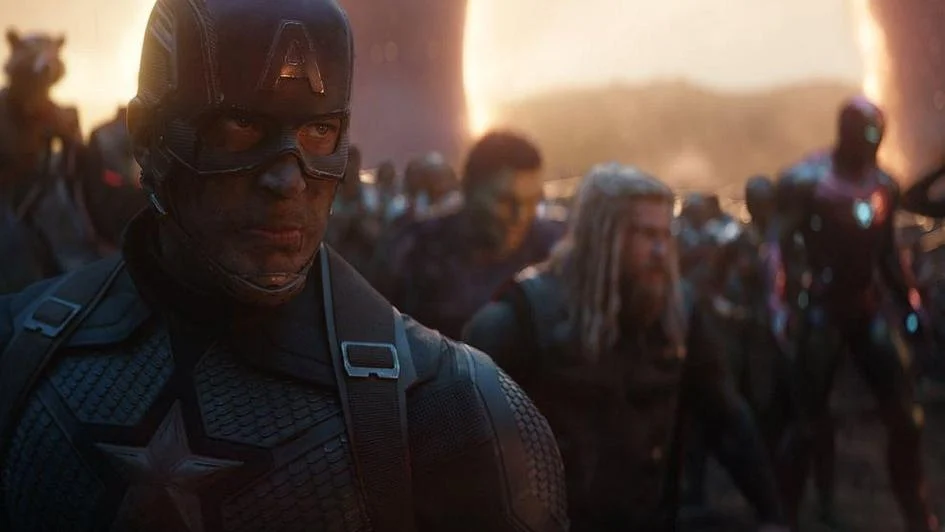
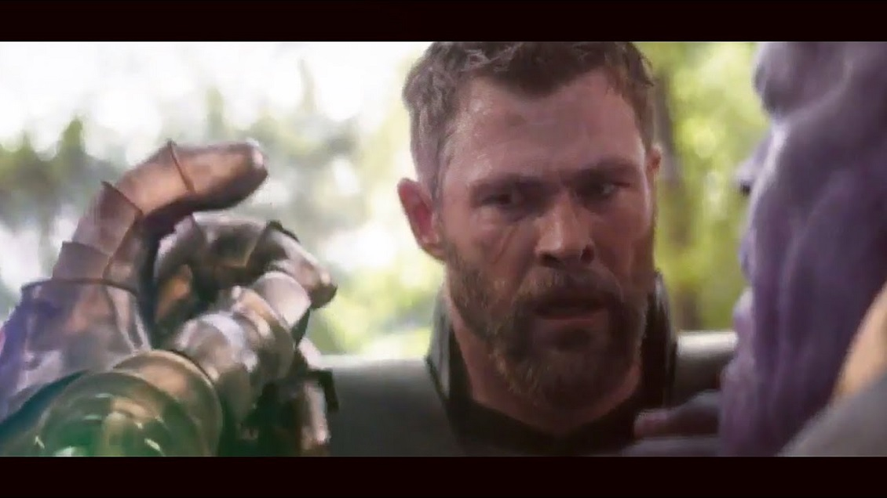
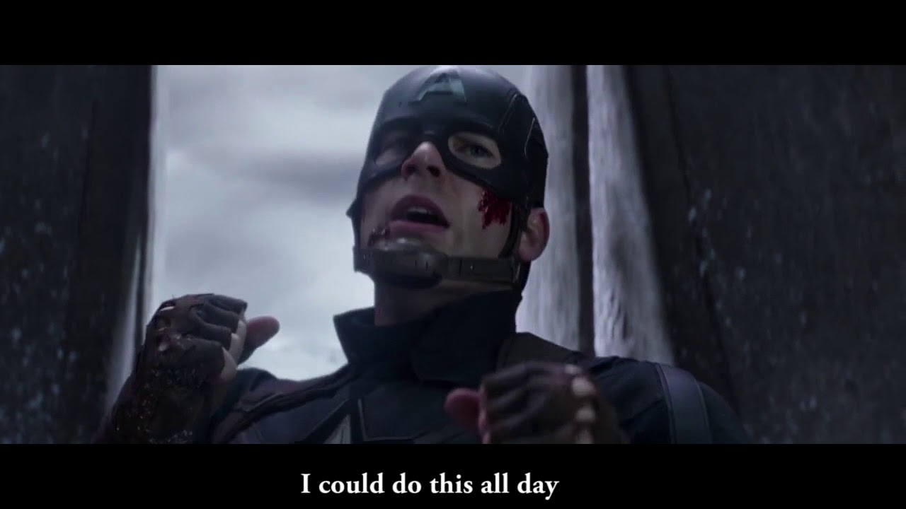

Los Vengadores
"Vengadores, reúnanse".
¡Falta poco para la pelicula!
"Vengadores, reúnanse".
¡Falta poco para la pelicula!
1."Yo soy Iron Man" (Iron Man, 2008). Tony Stark cierra su conferencia con esta frase, revelando al mundo su identidad como Iron Man.
2. "Avengers, reúnanse" (Avengers: Endgame, 2019). El Capitán América pronuncia esta icónica frase justo antes de la batalla final contra Thanos.
3. "Te amo 3,000" (Avengers: Endgame, 2019). Morgan Stark le dice a Tony esta frase antes de dormir, convirtiéndose en una de las más emotivas del UCM.

4. El sacrificio de Tony Stark (Avengers: Endgame, 2019). Tony usa el Guantelete del Infinito y chasquea los dedos para derrotar a Thanos, sacrificándose en el proceso.

5. El chasquido de Thanos (Avengers: Infinity War, 2018). Thanos usa el Guantelete del Infinito para eliminar a la mitad del universo, dejando a los Vengadores devastados.
6. "Puedo hacer esto todo el día" (Capitán América: El primer vengador, 2011). Steve Rogers demuestra su determinación incluso antes de convertirse en supersoldado.
7. Los Vengadores comiendo shawarma (Los Vengadores, 2012). Después de la batalla contra Loki, los héroes se reúnen en un restaurante de shawarma, en una escena poscréditos que se volvió un clásico.
8. Hulk destroza a Loki (Los Vengadores, 2012). Hulk agarra a Loki y lo golpea repetidamente contra el suelo, llamándolo "dios insignificante".